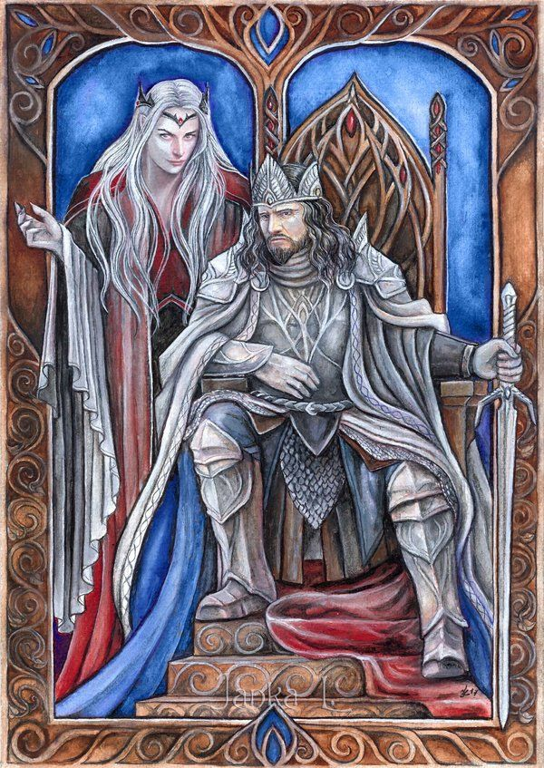

34 History
Brief History of OnceWas

There once was a great kingdom. In ages past, it was united and flourished under the wise rule of Lord Feall, whose influence stretched from the distant Endless Sea to the expansive eastern horizon. For nearly two radiant centuries, OnceWas thrived, adorned with awe-inspiring architectural marvels, bountiful harvests, and bustling trade that wove the realm together.
But the sands of time brought change. Feall’s noble spirit darkened with corruption and malevolence. Perhaps he was manipulated by his advisor, Ixalor the Necromancer, or driven mad by arcane longevity. Retreating from the world, Feall allowed Ixalor to seize power, ushering in an era of turmoil and tyranny.
Ixalor’s iron-fisted rule spread like a malignant blight, a parasitic shadow draining the life from the once-thriving realm. Provinces rebelled, their banners rising against the necromancer’s cruel grip. The noble houses led the charge, igniting the flames of the Great Rebellion that shattered OnceWas into fractured kingdoms.
Amidst the chaos, Dunmar, Hearthland, Solara, Arcanum, and Corsairia emerged as independent realms in their own right. Undeterred by dissent, Ixalor forged a dark empire in the North, bolstered by legions of orcs and undead horrors.
With each passing day, Ixalor’s malevolent sorcery grew stronger, fueled by unholy rituals that drained life and power from the land. Once a man of noble countenance, he twisted into a grotesque, wretched specter—a loathed scourge upon the realm. His reign of terror endured until a coalition of brave magic wielders, armed with an ancient talisman of formidable power, banished him to the desolate reaches of the Void Beyond the Shattered Gate.
Centuries passed like rivers flowing to the sea, and memories of Lord Feall, the Great Kingdom, and the tyrant Ixalor faded into the veils of history. All that remain are strange ruins, lingering ghosts, and the echoes of heroes who once forged their destinies—while new legends await their time to be written.
Timeline
The Age of Dragons
Most history prior to the Age of Dragons has been lost. What followed was a time of giants and dragons. It was a time when elves were numerous and men lacked the knowledge and mastery of steel and magic. Gods existed eternally but without form until the worship of men made the gods manifest.
These gods aided men, showing them how to forge and harness magic.
Xalara spreads terror across the land served by the first necromancer - Urikel Zarl. Urikel distinguished himself by slaying dozens of Metallic dragons over the years. He delighted in resurrecting them as undead servants to his Queen’s cause. Xalara rewarded her loyal servant by transforming him into a lich, so that Urikel could serve her for eternity as the Ghostlord.
The Age of Dragons ends with Gaoth slaying Xalara. He fatally wounded her on Lonely Hill and she died in the Veronian Mountains.
The Age of Men
Year 1 AoM: The Age of Man begins with the birth of Lord Feall and the death of Xalara.
Year 5 AoM: Galadriel becomes Elven Queen of Imladris.
Year 20 AoM: Lord Feall becomes a powerful warlord. He is advised by Ixalor, son of Isoma the Witch and once apprentice to Urikel. Ixalor is a gifted and cunning necromancer.
Year 30 AoM: Longspine, the Great Red Dragon, settles in the Dry Steppes.
Year 50 AoM: Lady Galadriel and the elven army of Imladris force the Drow underground in the south.
Year 60 AoM: The demon Lolth rises in power as a demigoddess.
Year 75 AoM: Lord Feall grows in power. Ixalor unites the Orc clans in Narragor under the banner of Lord Feall’s green demon. Ixalor discovers the Mondbaum tree in Hallras and uses it to prolong Lord Feall’s life. He has a keep built called Berrad Perras and appoints Gauhir to watch over it.
Year 85 AoM: The dwarves build Drell’s Keep and mine Lonely Hill.
Year 90 AoM: Drell’s Keep and the mines beneath it fall. The Dwarves succumbed to the curse of Xalara’s greed and slayed each other. Gishigan the Great, a wizard from the north, seals off the mines.
Year 100 AoM: Lord Feall’s armies spread across the OnceWas. Lord Feall is declared the OverKing. An age of enlightenment begins. The Great Kingdom is born.
Year 110 AoM: The OverKing’s empire is vast. Great cities were built. Incredible bridges and roads were constructed. Language is made common. The Great Kingdom thrived.
Year 125 AoM: Gishigan, Mordenkainen, Desinor, Lucan, and Pandaras raid Berrad Perras to acquire Mondbaum leaves from the white tree.
Year 135 AoM: The OverKing shows true signs of madness. The older Lord Feall became, the less human he is. Many believed Lord Feall was a husk under the complete control of Ixalor.
Year 140 AoM: Madness truly takes hold of Lord Feall. The OverKing is completely withdrawn from the world. Ixalor rules as his Regent.
Year 145 AoM: Ixalor expands his power and raises an army of orcs. Humanoids begin taking over as leaders of formerly human territories.
Year 150 AoM: The elves of Imladris create the Lamp of Anon.
Year 155 AoM: The demon Malar is wounded by the elves using the Lamp of Anon and flees to Narragor.
Year 165 AoM: Ixalor leads an army of orcs to attack Imladris and steal the Lamp.
Year 170 AoM: Ixalor returns to Narragor seeking ways to increase his power. He finds Malar and convinces him to serve him, giving Ixalor power over Lycanthropy. Malar destroys the Lamp.
Year 200 AoM: Lord Feall dies and is entombed by Ixalor. Ixalor’s rule is chaotic, and he is seen as a parasite over the Great Kingdom. The human fiefs begin to rise up against him.
Year 205 AoM: The Dukes of the Great Kingdom (Dun, Isig, Nyr, Keo, and Glant) rebel and wage war against the chaos of Ixalor. The Great War begins.
Year 210 AoM: Ixalor retreats to Sunvale. His orc army conquers that realm. Numenor, the fallen ruler of SunVale is cursed with Vampiracy.
Year 215 AoM: Ixalor conquers the areas north of Lake Quag.
Year 220 AoM: The Great Kingdom falls. The Empire of Ix is created in the North. The House of Dun raises the banner of Dunnador. Glantry, Keoland, and Isigir rise. War rages against the Empire of Ix.
Year 235 AoM: Isig goes missing.
Year 237 AoM: Nyr goes missing.
Year 240 AoM: Ixalor begins using dark rituals to steal power and life force. Ixalor now appears as an old man. He is considered the enemy of every sane and free person in the Oncewas.
Year 250 AoM: Ixalor’s armies conquer the Shield Lands, the Bandit Kingdom, the Barrens, and occupy part of Imladris. In his conquests, Ixalor’s armies slaughter nearly every last man, woman, and child, and then bring them back as undead to serve Ixalor.
Year 260 AoM: A road of skulls leads to the Empire’s capital Dorakaa, where Ixalor is worshipped as a living god.
Year 270 AoM: Ixalor appears to the northern barbarian tribes as their imprisoned deity, Vatun, and using magic to control Sevvord Redbeard, ruler of Stonehold, used these deceptions to start the raids against Glantri and Isigir.
Year 300 AoM: The War of the Sun and the Moon begins between Sunndi and Keoland.
Year 310 AoM: Minas Ithil is built over the ruins of Drell’s Keep.
Year 320 AoM: Ixalor ascends and truly becomes a demi-god. Followers of Ixalor can cast spells. Nergal gives Ixalor the Black Shield.
Year 325 AoM: An alliance of wizards is formed to stop Ixalor. (Mordenkainen, Gishigan, Desinor, Zygag, Stephen Amber, Bigby, Tenser, and Rory)
Year 330 AoM: Bigby, Tenser, and Rory go missing.
Year 335 AoM: Antru turns his back on Ixalor and the sun no longer shines on the Empire.
Year 340 AoM: The Polmarj is created as a penal colony by Keoland.
Year 349 AoM: Zygag the Mad creates the GodTrap.
Year 350 AoM: The Alliance of Wizards attacks Dorakka. The GodTrap imprisons Ixalor in the Far Realm. The Alliance claims the Black Shield. Followers of Ixalor can no longer cast spells.
Year 355 AoM: Lord Dorag the Boneshadow rules the Empire during Ixalor’s absence.
Year 360 AoM: Stephen Amber claims the Vorpal Sword.
Year 365 AoM: Stephen Amber is murdered. The people within Castle Amber disappear from Glantri City.
Year 370 AoM: The Alliance of Wizards disbands. Desinor the Druid goes into isolation.
Year 375 AoM: The Black shield is bequeathed to the House of Dun.
Year 380 AoM: Zygag entrusts the GodTrap to his apprentice Heinlore Driessle.
Year 385 AoM: Zygag dies.
Year 395 AoM: Driessle goes into hiding.
Year 400 AoM: Bruenor Battlehammer becomes King of the Dwarven Stronghold.
Year 410 AoM: Orcs, once united by Ixalor, now war amongst themselves.
Year 430 AoM: Bruenor Battlehammer becomes Dwarven King of the Rath Knan mountains.
Year 440 AoM: Ixalor imposters attempt to take the throne in Dorakka. Civil war breaks out in the Empire of Ix.
Year 450 AoM: 100 years of peace begins.
Year 550 AoM: The first plague decimates Dunnador and Glantri.
Year 650 AoM: Hobgoblin cults to Xalara rise up in the Dunatis Mountains.
Year 570 AoM: Lynwerd of Aerdi becomes King of Nyrond.
Year 585 AoM: Civil War ends in the Empire of Ix with Lord Dorag seizing control.
Year 595 AoM: Halfred is born heir to the throne of Dunnador.
Year 600 AoM: Balakarde the Venerable, Keoghtom the Alchemist, Nystul the Illusionist, Leomund the Conjurer, Mortekai the Black, Otto the Enchanter, and Alhamazad the wise currently serve as princes of Glantri.
Year 610 AoM: Gishigan the Great suffers from madness and goes into hiding.
Year 620 AoM: Mixed armies of different races band together and overthrow the Keolandish occupying forces in the Pomarj. Turrosh the Terrible becomes Overlord of the Pomarj. The Pomarj is declares itself a Kingdom.
Year 625 AoM: Halfred is crowned King of Dunnador. The Bandit Kingdom begins raiding Nyrond. Castamir the Usurper becomes King of Isigir.
Year 630 AoM: Queen Kimbertos Skotti is the Grand Monarch of Keoland.
Year 635 AoM: Castimir usurps the throne of Isigir. The war of Belmont Bay starts between Isigir and Dunnador. King Halfred goes to war and Duke Edrin rules as regent.
Year 637 AoM: A truce is declared in the War of Belmont Bay. Edrin opposes Halfred’s return but bitterly acquiesces.
Year 645 AoM: Sir Hund, with the Black Shield, leads a crusade against Baron Numenor. He and his men are massacred at the Battle of Turn Back Pass.
Year 648 AoM: The second plague strikes. Lycanthropy spreads through the land. Glantri is blamed. Wizards and magic become scorned and distrusted.
Year 649 AoM: Horrors from the Far Realm begin crossing over into the OnceWas. The Orcs of Narragor begin uniting under the banner of a Red Claw. Followers of Ixalor are able to cast spells. Lord Dorag is brutally murdered and his bones are used to fashion a new throne for the Emperor, who is prophesied to return to Dorakka.
Year 650 AoM: Present day.